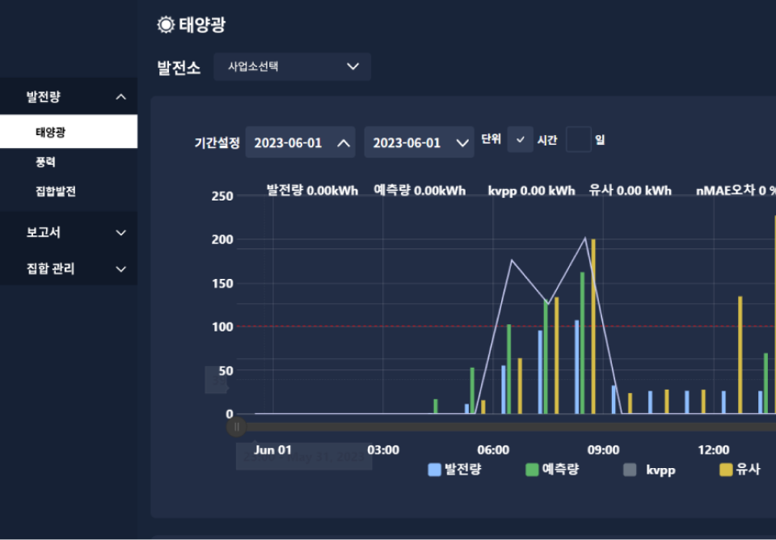
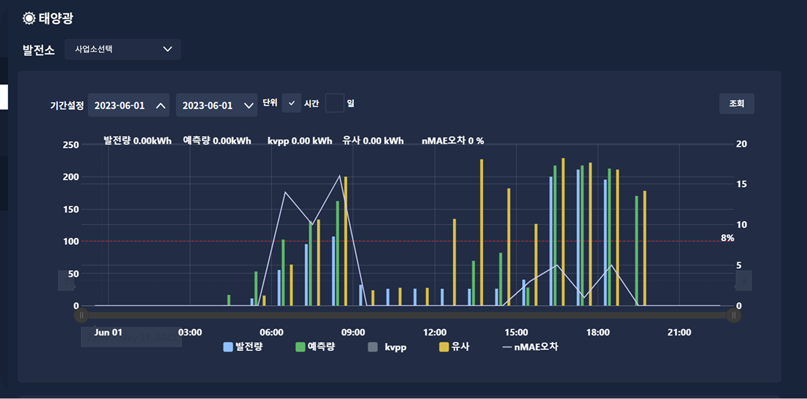
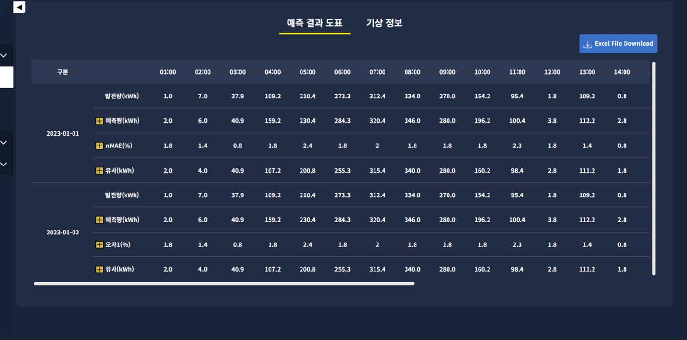
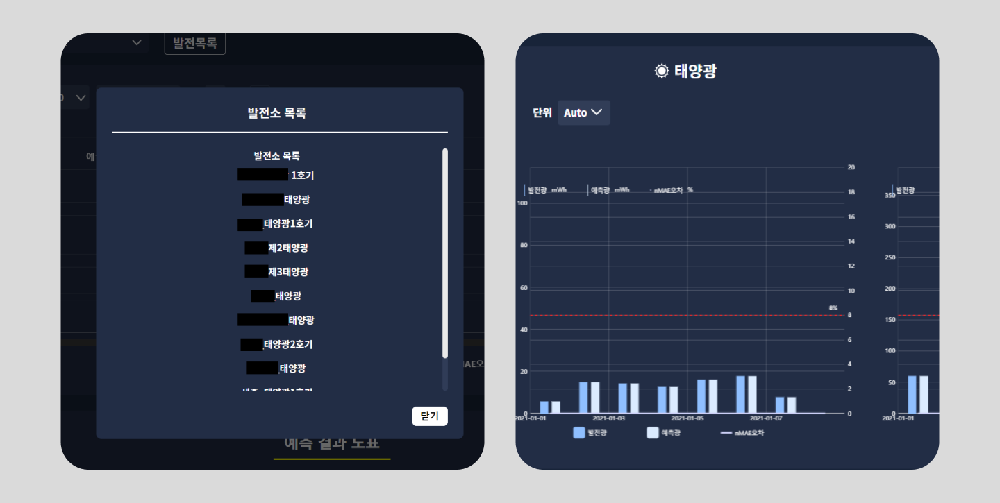

(2023/02/08 ~ 2023/06/30)
신재생에너지 태양광 풍력 발전량 예측 페이지 구축
신재생에너지 태양광 풍력 발전량 예측 통계량을 비교하여 볼 수 있는 중부발전 사내 직원용 웹페이지입니다. 상단에는 막대그래프와 하단에는 도표로 대시보드를 구성하였습니다.기본적인 UI인터렉션을 구현하여 개발자와의 협업 효율을 높였습니다.



신재생에너지 태양광 풍력 발전량 예측 통계량을 비교하여 볼 수 있는 중부발전 사내 직원용 웹페이지입니다.
상단에는 막대그래프와 하단에는 도표로 대시보드를 구성하였습니다.
기본적인 UI인터렉션을 구현하여 개발자와의 협업 효율을 높였습니다.